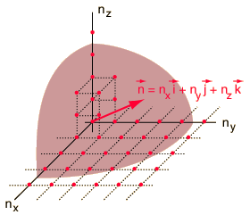

Electron Energy Density
The behavior of electrons in solids depends upon the distribution of energy among the electrons:

Since electrons are fermions, the distribution function is the Fermi-Dirac distribution
This distribution determines the probability that a given energy state will be occupied, but must be multiplied by the density of states function to weight the probabability by the number of states available at a given energy.
The determination of how many ways there are to obtain an energy in an incremental energy range dE can be approached with the quantum mechanical particle in a box. The energy for an infinite walled box is

|

The Rayleigh scheme for counting modes. | Treating the "quantum numbers" n as a space such that a given set of n values determines a point in that space, you can argue that the number of possible states is proportional to the "volume" in "n-space".
It is convenient to define a radius R in n-space:  |
The energy can be expressed in terms of R and vice versa.
The n-space associated with the particle-in-a-box involves only positive values of n, so the volume must be divided by 8. It then must be multiplied by 2 to account for the two possible spin values of the electron. The number of values is then
The number of states per unit volume is
The final density of states as a function of energy is then the deriviative of this population with respect to energy
This represents the number of electron states per unit volume per unit energy at energy E. This energy density is a factor in many of the electical properties of solids. Note that the result is independent of the dimension L which was chosen above, showing that the expression can be applied to the bulk material.
| Application in solids |
Quantum statistics concepts
References
Rohlf
Sec 12.6
Richtmyer, et al.
Ch. 5